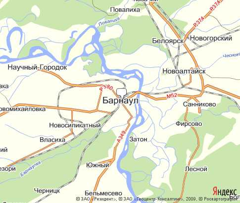
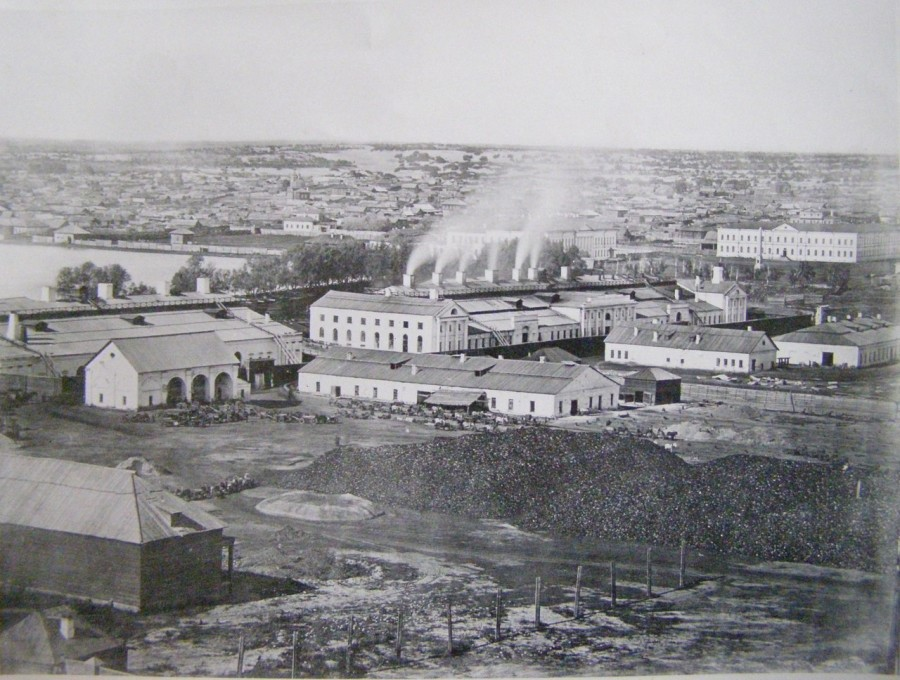

Барнаул - старейший город в западной Сибири, является столицей Алтайского края. Численность населения составляет более 695 тысяч человек. Именно здесь сделали первую паровую машину и многое другое.

На сегодняшний день в Барнауле по-настоящему кипит жизнь. Здесь облагораживают и модернизируют старые районы, создают новые. Город не останавливается ни на минуту.
на одной широте с барнауломГород располагается в лесостепной зоне Западно-Сибирской равнины, в северо-восточной части Приобского плато, на левом берегу реки Обь, в устье реки Барнаулки. С северо-восточной части город огибает русло Оби, с юго-западной - ленточный бор. Расстояние от Барнаула до Москвы — 3419 км. Ближайший крупный город — Новосибирск (239 км).
Географические координаты Барнаула: 53°20′с.ш. 83°46′в.д. - координаты «нулевого километра», от которого отсчитываются все расстояния в Алтайском крае.
На той же широте, что и Барнаул, расположены:
Город Барнаул находится в часовом поясе Красноярское время. Смещение относительно UTC составляет +7:00. Относительно московского времени часовой пояс имеет постоянное смещение +4 часа и обозначается в России как MSK+4.
Континентальный климат Барнаула определяется своеобразным географическим положением на юге Западной Сибири. Открытость воздействию одновременно со стороны Атлантики, Алтайских гор, Северного Ледовитого океана и степных районов Средней Азии создаёт возможность поступления различных по свойствам воздушных масс, что способствует значительной контрастности погодных условий. Для Барнаула характерна морозная, умеренно-суровая и снежная зима, но теплое, комфортное и умеренно влажное лето.
Город Барнаул основан в 1730 г. Место у впадения в Обь реки Барнаулки некогда облюбовали приказчики уральского горнозаводчика Акинфия Демидова для строительства плавильного завода.
Расположение оказалось очень удачным, Барнаульский сереброплавильный завод быстро набирал силу и темпы. Но вскоре производство серебра - валютного металла - частным заводчикам было запрещено, и Демидов лишился алтайских предприятий. В 1747 году Власть конфисковала заводы и со следующего года они перешли в ведение Кабинета Её Императорского Величества Елизаветы Петровны и стали собственностью царской фамилии.
В 1771 г.Барнаул получил статус горного города, единственного в Сибири и второго в России после Екатеринбурга.